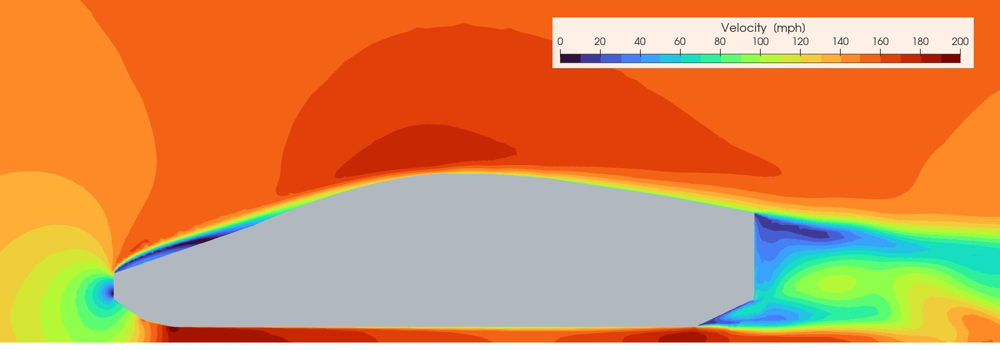
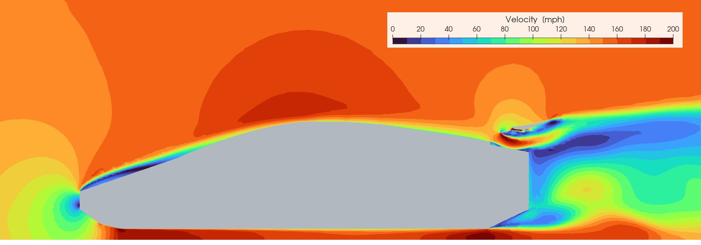
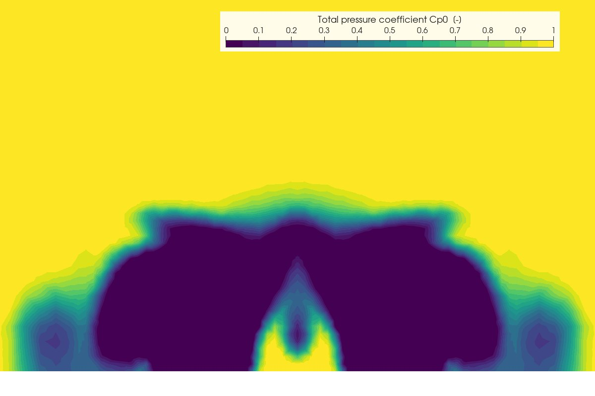
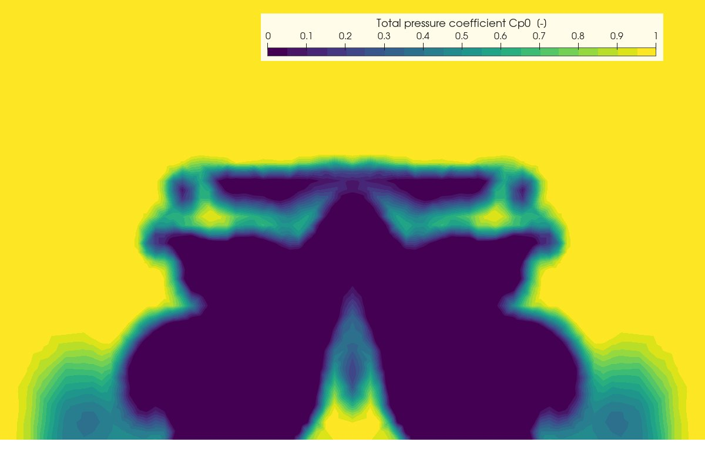

Roadster Aero: Road vs Race
An electric roadster at 150 mph in two configurations: the rear wing stowed flush with the deck (road) and raised to 12° with a leading-edge slat (race). Same mesh rules, same solver, one change. Raising the wing turns 218 lbf of lift into 448 lbf of downforce, and costs 232 lbf of drag.
In progress · road and race runs doneThe car (race configuration)
The race geometry as meshed: 14.4 ft long, 6.5 ft wide, 3.8 ft tall, 9.27 ft wheelbase, rear wing (orange) raised on two linkages with a slat 0.75 in ahead of the main element. My own approximate model built from published dimensions and photos, not manufacturer CAD. Drag to rotate, scroll to zoom.
Explore the results in 3D
Each run has a full results page: surface pressure on the car in 3D, a smoke wand or rake you can drag anywhere in the flow (puffs ride the computed velocity field), the force breakdown by part, convergence history and flow pictures.
Road vs race at 150 mph
| Full car | Road | Race | Change |
|---|---|---|---|
| Drag coefficient Cd | 0.372 | 0.532 | +0.160 |
| Frontal area | 20.74 ft² | 22.24 ft² | +7 % |
| Drag area CdA | 7.72 ft² | 11.82 ft² | +53 % |
| Drag | 437 lbf | 669 lbf | +232 lbf |
| Power to overcome drag | 175 hp | 268 hp | +93 hp |
| Lift (+) / downforce (−) | +218 lbf | −448 lbf | 666 lbf swing |
| Front axle | +151 lbf | +290 lbf | more lift |
| Rear axle | +67 lbf | −737 lbf | 804 lbf more down |
Averages over iterations 1600–2500 of each steady run; the two halves of that window agree within 0.7 % for drag. Coefficients use each configuration's own frontal area, so compare the forces in lbf.
Where the extra drag comes from
| Part | Road drag | Race drag | Change |
|---|---|---|---|
| Body | 242 lbf | 366 lbf | +124 lbf |
| Wing, slat, linkages | – | 93 lbf | +93 lbf |
| Tyres | 193 lbf | 205 lbf | +12 lbf |
| Exhaust nozzles, rest | 2 lbf | 5 lbf | +3 lbf |
The wing is efficient on its own: about 557 lbf of downforce for 93 lbf of drag. More than half the drag penalty shows up on the body: the open wing bay, and the wing turning the flow over the rear deck and base, raise the body's own drag by half. In the road car, the exposed tyres are 44 % of all drag.
The flow




Setup
| Speed | 150 mph (67.06 m/s), Mach 0.2, Reynolds number about 13 million on the wheelbase |
| Geometry | One STL per configuration, one surface per part (body, tyres, wing, slat, linkages, nozzles). Road: wing blended into the deck so nothing is left to mesh in the gap. Tyres sit on small contact plinths to avoid skewed cells at the contact patch |
| Domain | Half model with a symmetry plane; 3 car lengths ahead, 6 behind, 4 car heights to the side and top (3.4 % blockage) |
| Ground and tyres | Rolling road at free-stream speed, tyres turning about their axles (moving-wall boundary conditions) |
| Mesh | snappyHexMesh: 0.4 in cells on the car, 0.2 in on creases and tyres, 0.1 in on the wing (to resolve the 0.75 in slot), 4 prism layers. Road 2.23 M cells, race 3.63 M |
| Solver | simpleFoam (steady, incompressible), k-ω SST with wall functions (average y+ about 130 on the body) |
| Run | 2500 iterations on 4 cores of an M4 MacBook Air: road 2 h 13 min, race 4 h 01 min |
The setup is copied from my NASCAR truck and Ahmed body cases; the Ahmed body run matched wind-tunnel drag. There is no published data for this car to validate against, so read these as a consistent comparison between the two configurations rather than absolute numbers.
What I learned
- A wing's cost is not just its own drag. Here the body's drag rose more than the wing's own drag, because the wing changes the pressure on the deck and base behind and below it.
- Downforce at the back pitches the balance: the raised wing put 737 lbf on the rear axle and raised front lift from 151 to 290 lbf. A real race setup needs front downforce (splitter, dive planes) or less wing.
- Small gaps drive the mesh. The 0.75 in slot between slat and wing needed 0.1 in cells, which took the race mesh from about 2 M to 3.6 M cells and nearly doubled the run time.
- On a low, smooth car the tyres are a big share of drag (44 % here). Rolling road and turning tyres are worth the setup effort.
Roadmap
Road and race at 150 mph
Two configurations, one change. Forces, balance, flow pictures, 3D results with a smoke probe.
Balance the race car
Lower wing angle or front downforce (splitter) to bring the front axle back toward zero lift.
Mesh check
Coarser and finer meshes on the race car, to put an error band on the drag and downforce.